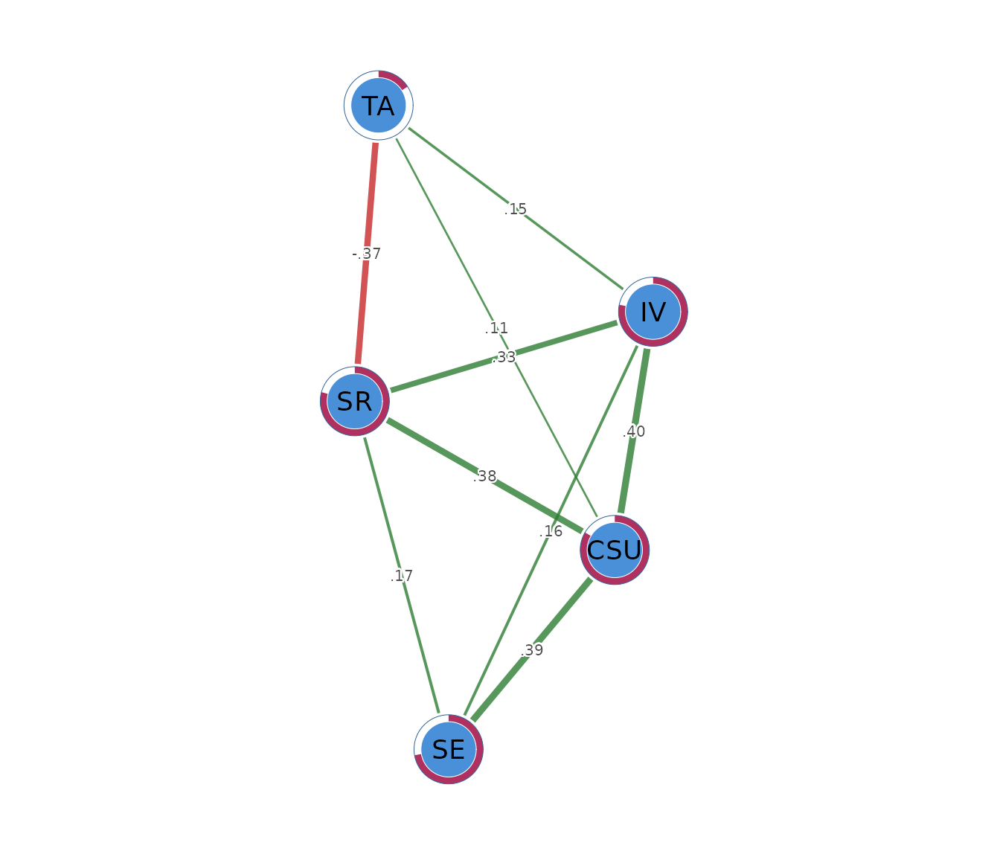

Information-filtering networks with TMFG and LoGo
Source:vignettes/information-filtering-networks.Rmd
information-filtering-networks.RmdWhat an information-filtering network is
An information-filtering network reduces a large set of associations to a structured backbone. The practical goal is to retain the connections that best organize the variables while removing many weak or redundant links. This approach is useful when a complete correlation network is too dense to support a clear interpretation.
The workflow has two stages. The Triangulated Maximally Filtered Graph (TMFG) selects the network structure. Its edge weights are ordinary correlations, so a TMFG edge describes the association between two variables before adjustment for the others. The Local-Global method (LoGo) then estimates partial correlations on the selected structure. A LoGo edge describes the association that remains above and beyond what the other variables in the network can explain.
Consider motivation and academic achievement in a larger network that also contains prior achievement, study effort, self-efficacy, and test anxiety. TMFG can retain the motivation-achievement correlation as part of the backbone. LoGo then asks how much of that association remains after the other variables have been accounted for. A large TMFG weight and a small LoGo weight would suggest that much of the ordinary correlation is shared with the other measured variables.
TMFG and LoGo therefore answer related but distinct questions. TMFG identifies a compact organization of the correlations. LoGo converts that organization into a conditional-dependence network. Neither method identifies causal direction.
The data
The worked example uses SRL_GPT, a data frame with 300
observations on five self-regulated learning constructs. Cognitive
strategy use (CSU), intrinsic value (IV),
self-efficacy (SE), self-regulation (SR), and
test anxiety (TA) are composite scores on a 1 to 7
scale.
head(SRL_GPT)
#> CSU IV SE SR TA
#> 1 5.307692 5.666667 5.777778 5.333333 4.00
#> 2 5.846154 6.444444 6.000000 5.777778 4.00
#> 3 6.615385 6.666667 6.222222 6.333333 3.25
#> 4 5.692308 6.555556 6.333333 5.555556 4.50
#> 5 4.384615 5.555556 4.888889 4.777778 4.00
#> 6 4.846154 5.444444 5.666667 5.111111 3.50Rows are observations and columns are network nodes. The analysis treats these composite scores as continuous. The data are complete, so the default Pearson correlations use all 300 observations. Applications to other data should examine missingness, distributions, unusual observations, and measurement scales before network estimation.
Building the correlation backbone with psychnet()
psychnet() builds a TMFG network when
method = "tmfg". It computes the correlation matrix and
selects a planar, connected structure. The returned
psychnet object stores signed correlations on the retained
edges.
tmfg_net <- psychnet(data = SRL_GPT, method = "tmfg")
tmfg_net
#> <psychnet> tmfg network
#> nodes: 5 edges: 9 (undirected)The fitted backbone contains 5 nodes and 9 edges. With five nodes, only one of the ten possible pairs is removed. Information filtering becomes more selective as the number of nodes increases because the number of retained edges grows approximately linearly with the number of nodes.
Inspecting the TMFG edges with summary()
summary() prints the fitted network and returns its edge
table invisibly. The columns from, to, and
weight identify each retained pair and its signed Pearson
correlation.
summary(tmfg_net)
#> <psychnet> tmfg network
#> nodes: 5 edges: 9 (undirected)
#> edge weight: range [-0.302, 0.861], mean 0.486The learning constructs form a strongly correlated block. Their
retained correlations range from 0.779 for
SE-SR to 0.861 for
CSU-IV. Test anxiety has negative correlations
with the learning constructs in the backbone. Its largest absolute
relation is with self-regulation
().
The SE-TA pair is the single edge excluded
from the five-node backbone. Its absence means that TMFG did not select
that pair within the constrained network structure. It does not imply a
zero population correlation. TMFG chooses edges as a connected system,
so edge inclusion depends on how a pair contributes to the complete
topology.
Estimating conditional associations with LoGo
psychnet() estimates the LoGo network when
method = "logo". It constructs the same TMFG support and
estimates a sparse precision matrix on that structure. The returned edge
weights are partial correlations.
logo_net <- psychnet(data = SRL_GPT, method = "logo")
logo_net
#> <psychnet> logo network
#> nodes: 5 edges: 9 (undirected)
#> optimality (KKT residual): 6.66e-16The LoGo model contains the same number of nodes and edges as the TMFG backbone. Its weights have a different meaning because each relation is adjusted for the remaining variables.
summary(logo_net)
#> <psychnet> logo network
#> nodes: 5 edges: 9 (undirected)
#> optimality (KKT residual): 6.66e-16
#> edge weight: range [-0.372, 0.404], mean 0.191The largest positive partial correlation joins CSU and
IV
().
Cognitive strategy use and intrinsic value remain positively associated
above and beyond self-efficacy, self-regulation, and test anxiety. The
CSU-SE and CSU-SR
partial correlations are also positive, at 0.393 and 0.377.
The SR-TA edge is negative
().
Higher self-regulation is associated with lower test anxiety after the
other constructs have been taken into account. This adjusted relation is
slightly larger in absolute magnitude than its TMFG correlation of
-0.302.
The change in the IV-SE edge illustrates
why the two stages should not be interpreted interchangeably. Its TMFG
correlation is 0.785, while its LoGo partial correlation is 0.165. Much
of the ordinary association between intrinsic value and self-efficacy is
shared with the other learning constructs. The LoGo edge represents the
smaller association that remains after this shared structure is
accounted for.
Checking the TMFG structure with certificate()
certificate() checks the defining properties of a fitted
network and returns method, certificate,
kind, and certified. For TMFG, the certificate
is structural. A zero value means that the graph has the required edge
count, is connected, and has the chordal structure required by the
method.
certificate(tmfg_net)
#> method certificate kind certified
#> 1 tmfg 0 structural TRUEThe TMFG certificate is 0 and certified is
TRUE. The fitted backbone satisfies all three structural
checks. This diagnostic verifies the construction of the graph. It does
not evaluate whether the retained edges are stable across samples or
whether the variables are measured adequately.
Checking the LoGo solution with certificate()
certificate() evaluates numerical optimality for a LoGo
network. Its certificate value is the largest discrepancy
between the observed correlation matrix and the covariance matrix
implied by the fitted precision on retained edges and diagonal entries.
It also checks that precision entries outside the selected structure are
zero.
certificate(logo_net)
#> method certificate kind certified
#> 1 logo 6.661338e-16 kkt TRUEThe LoGo residual is
and certified is TRUE. The value is at the
order of machine precision, which indicates that the fitted precision
matrix satisfies the defining numerical conditions to numerical
precision. This check concerns computation. It does not assess sampling
uncertainty or causal validity.
Describing node position with net_centralities()
net_centralities() summarizes the position of each node
in the LoGo network. Its default output contains node,
strength, and expected_influence. Strength
sums the absolute partial correlations at a node. Expected influence
sums the signed partial correlations, allowing positive and negative
edges to offset each other.
net_centralities(logo_net)
#> node strength expected_influence
#> 1 CSU 1.2843138 1.2843138
#> 2 IV 1.0448601 1.0448601
#> 3 SE 0.7265229 0.7265229
#> 4 SR 1.2474068 0.5033273
#> 5 TA 0.6284383 -0.1156412Cognitive strategy use has the largest strength and expected influence, both 1.284, because all of its edges are positive. Self-regulation has strength 1.247 and expected influence 0.503. Its negative edge with test anxiety reduces the signed total.
Test anxiety has strength 0.628 and expected influence -0.116. These values describe its connections within the fitted model. They do not imply that a node with high centrality causes the other variables or should automatically become an intervention target.
Quantifying node predictability with net_predict()
net_predict() reports the proportion of each node’s
variance accounted for by the remaining nodes. For LoGo, the function
returns node, type, metric,
predictability, and accuracy. The continuous
nodes use
,
and classification accuracy is recorded as NA.
net_predict(logo_net)
#> node type metric predictability accuracy
#> 1 CSU gaussian R2 0.8347645 NA
#> 2 IV gaussian R2 0.7824561 NA
#> 3 SE gaussian R2 0.7227872 NA
#> 4 SR gaussian R2 0.7923888 NA
#> 5 TA gaussian R2 0.1589941 NACognitive strategy use has the highest predictability (). Self-regulation (), intrinsic value (), and self-efficacy () are also strongly accounted for by the remaining constructs. Test anxiety has the lowest predictability (), leaving most of its variance outside this network.
Predictability is an in-sample model quantity here. Claims about performance on new observations require a separate validation procedure.
Visualizing the conditional network with
cograph::splot()
cograph::splot() draws the LoGo network when the
optional cograph package is available. Psychological
styling uses green for positive partial correlations and red for
negative partial correlations. The predictability ring displays the
node-level
values.
cograph::splot(logo_net, psych_styling = TRUE, predictability = TRUE)
The plot is a visual summary of the LoGo edge table. Edge colour represents sign and edge width represents magnitude. Node positions are produced by a layout algorithm and have no statistical unit. Numerical interpretation should use the printed edge table and node summaries.
Sensitivity to rank correlations
psychnet() accepts cor_method = "spearman"
for a rank-based sensitivity analysis. Applying this option to LoGo
checks whether the conditional structure has a similar interpretation
when the analysis uses monotonic rank associations.
logo_spearman <- psychnet(data = SRL_GPT, method = "logo", cor_method = "spearman")
logo_spearman
#> <psychnet> logo network
#> nodes: 5 edges: 9 (undirected)
#> optimality (KKT residual): 1.55e-15
summary(logo_spearman)
#> <psychnet> logo network
#> nodes: 5 edges: 9 (undirected)
#> optimality (KKT residual): 1.55e-15
#> edge weight: range [-0.301, 0.440], mean 0.191The rank-based LoGo model retains the same nine pairs. The main
relations also persist. The CSU-IV and
CSU-SE partial correlations are 0.412 and
0.440, and the SR-TA edge remains negative at
-0.301. The weak CSU-TA edge decreases from
0.110 to 0.071. The main structure is consistent across the two
correlation estimators, while some edge magnitudes remain sensitive.
certificate(logo_spearman)
#> method certificate kind certified
#> 1 logo 1.554312e-15 kkt TRUEThe rank-based LoGo model has a residual of and is certified, indicating numerical agreement with its defining conditions to numerical precision.
Reporting the analysis
A report should identify the variables, sample size, correlation estimator, missing-data procedure, and the distinct roles of TMFG and LoGo. TMFG weights must be described as correlations, while LoGo weights must be described as partial correlations. Edge tables should be reported numerically, and conditional associations should be kept separate from causal claims.
The present analysis used Pearson correlations on 300 complete
observations. TMFG selected a nine-edge backbone. LoGo estimated partial
correlations on that structure and returned a numerical residual of
.
The largest positive LoGo edge was CSU-IV
(),
and the negative SR-TA edge was -0.372. A
Spearman sensitivity model retained the same edge set and preserved the
main qualitative pattern.
How information filtering works
TMFG builds a network under a fixed structural rule. It begins with four nodes that have strong associations within the correlation matrix. Each remaining node is added to the triangular location where its connections contribute the greatest total association. This sequential construction produces a connected graph made of linked triangles.
A TMFG with nodes retains exactly edges. The edge count grows linearly with the number of nodes, while the number of all possible pairs grows quadratically. The method therefore performs stronger filtering in larger networks. Edge selection is determined by the structure as a whole, so TMFG is not a simple list of the globally largest correlations.
LoGo uses the triangular structure to estimate the conditional network. The TMFG graph can be decomposed into overlapping groups of four nodes and their shared three-node separators. LoGo combines covariance information from these small blocks to obtain the precision matrix. This construction yields partial correlations on the TMFG support without a penalty parameter or an iterative optimization path.
Mathematical foundations
This section states the structural and statistical identities precisely. It can be skipped when the practical workflow is the main interest.
TMFG edge count
TMFG begins with a four-node clique containing six edges. Each subsequent node is inserted into one triangular face and connected to its three corners. Every insertion adds one node and three edges. A network with nodes therefore has
edges. The insertion rule preserves planarity and chordality throughout the construction.
LoGo precision matrix
Let be the sample correlation matrix, the set of four-node cliques, and the set of three-node separators. LoGo constructs the precision matrix as
where the superscript denotes placement of each inverse block into the full matrix with zeros outside that block. The required block inverses must exist, so duplicate or perfectly collinear variables must be resolved before fitting LoGo.
The partial correlation between nodes and is
Numerical certificate
Let
.
On every retained edge and every diagonal entry, the fitted covariance
equals the corresponding entry of
.
Precision entries outside the TMFG support are zero.
certificate() reports the largest absolute discrepancy
across these conditions. A value near machine precision indicates that
the LoGo construction satisfies the defining identities to numerical
precision.
Predictability
For node , LoGo predictability follows from the diagonal precision entry:
net_predict() evaluates this identity for every node in
the conditional network.